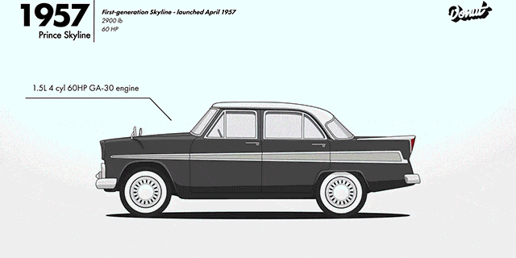

Sus inicios
Al principo el Nissan Skyline fue pensado como un auto familiar. Sin embargo, se vio su potencial como auto de turing y de pista. Los primeros modelos no eran nada que ver con los del R-32 en adelante. En este sitio vamos a hablar de los miticos modelos R-32, R-33, R-34, R-35 y R-36 (este ultimo siendo un prototipo). Estos autos dentro de la cultura del tuning y las carreras se han vuelto un ícono. Tienen también fama en películas y en videojuegos.
